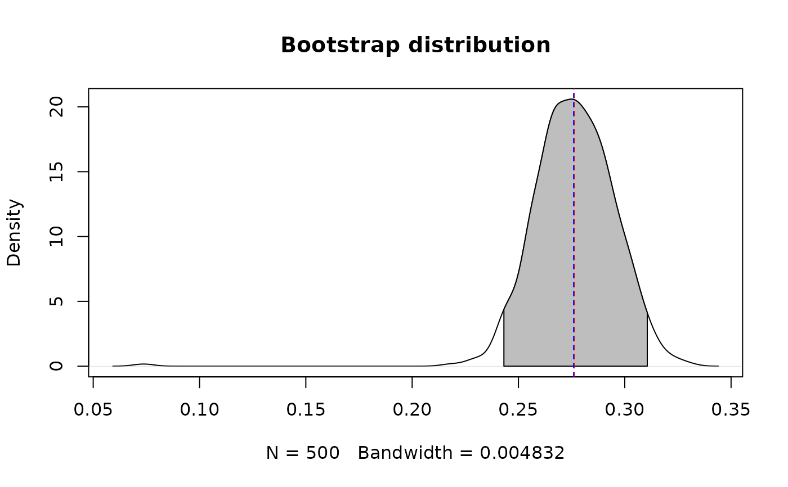

Plot the bootstrap distribution for a parameter from a litfit object
Source:R/bootstrap.R
plot.litfit_bootstrap.RdPlot a bootstrap distribution of a particular coefficient
Usage
# S3 method for class 'litfit_bootstrap'
plot(x,coef.index,bw,...)Arguments
- x
litfit object
- coef.index
coefficient number to plot from the
litfitobject, see order of coefficients for that particular model. Default is to plot the first parameter for that model- bw
bandwidth (or bandwidth algorithm see
density) for the density plot- ...
additional arguments passed to plot.default
Details
The grey fill goes from 0.025 quantile to the 0.975 quantile of the distribution. Red line shows the mean. Blue line shows the median.
Examples
fit <- fit_litter(time=pineneedles$Year,
mass.remaining=pineneedles$Mass.remaining, model='neg.exp', iters=200)
#> Number of successful fits: 194 out of 200
boot1 <- bootstrap_parameters(fit, nboot = 500)
plot(boot1)
